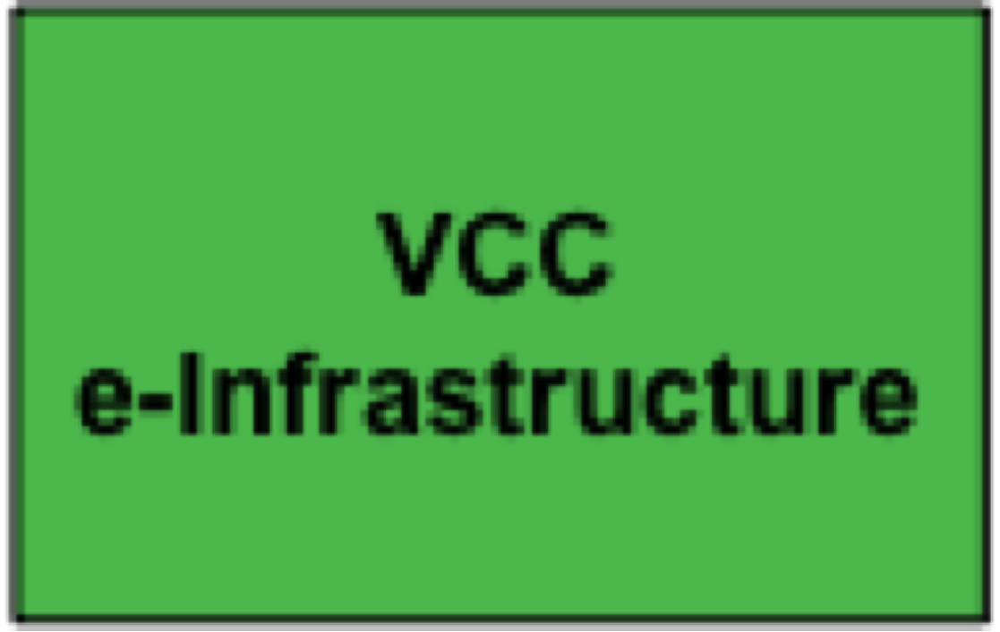

|
Welcome
The mission of DARIAH is to enhance and support digitally-enabled research across the humanities and arts. DARIAH aims to develop and maintain an infrastructure in support of ICT-based research practices.
DARIAH is working with communities of practice to:
- Explore and apply ICT-based methods and tools to enable new research questions to be asked and old questions to be posed in new ways
- Improve research opportunities and outcomes through linking distributed digital source materials of many kinds
- Exchange knowledge, expertise, methodologies and practices across domains and disciplines
|
|
Latest News
From the 2nd - 6th of July 2012 Digital.Humanities@Oxford Summer School (DHOXSS) delegates visiting the University of Oxford, UK, will be introduced to a range of topics suitable for researchers, project managers, research assistants, and students who are interested in the creation, management, or publication of digital data in the humanities.
Delegates will follow one of a 5 day workshops on:
* An Introduction to XML and the Text Encoding Initiative
* Working with TEI Texts (Advanced)
* An Introduction to Digital Humanities Tools and Approaches
* A Humanities Web of Data: Publishing, Linking, Querying and Visualisation on the Semantic Web
|
 DARIAH will interface to key fluencers in and for the arts and humanities through the Virtual Compentency Centre 4 (VCC4) Advocacy, Impact and Outreach. DARIAH will interface to key fluencers in and for the arts and humanities through the Virtual Compentency Centre 4 (VCC4) Advocacy, Impact and Outreach.
Goals and scope
This VCC will focus on high level advocacy, assessing the impact of DARIAH and measuring the ‘added value’ that it brings, outreach to wide groups of stakeholders, and ensuring capacity and participation in DARIAH. High-Level Advocay The targeted audience of this activity comprises key influencers in all roles and disciplines/industries who are in a position to promote, collaborate with, and finance DARIAH. DARIAH will engage with those audiences in managed formal and informal meetings, polished information packages and PR campaigns, as well as in the coordination of DARIAH's response and participation in, for example, funding calls.
Impact & Value This activity assesses the impact of DARIAH and measures the ‘added value’ that it brings through quantitative and qualitative measures. It will focus on how DARIAH facilitates the transfer of knowledge and expertise between (a) the relevant disciplines within the humanities (themselves often silos) and (b) the humanities and other areas such as qualitative social sciences, computer science, information science, and bioinformatics.
Outreach DARIAH seeks mutually beneficial relationships with a wide community of stakeholders which potentially feed into A+H research, including cultural tourism, industrial partners and publishers. The DARIAH summer schools, organised by the VCC2, in attempt to bring scholars of related disciplines of the humanities and arts together, contribute to the task 4.4. in terms of calls, released to already interested groups of stakeholders in the scholarly community. Ensuring Capacity in DARIAH This activity ensures the consistency and growth of the DARIAH network of partners. To achieve this, it identifies contact points for potential national partners in Europe potential institutional partners potential industrial partners gaps in skills and resources within the DARIAH network This activity also ensures the adequate incorporation of the skills of new DARIAH partners into relevant VCCs. For further information please contact our VCC head Dirk Wintergrün
 The DARIAH scholarly content management will expose and share scholarly content and is carried out by the Virtual Compentency Centre 3 (VCC3) Scholarly Content Management. The DARIAH scholarly content management will expose and share scholarly content and is carried out by the Virtual Compentency Centre 3 (VCC3) Scholarly Content Management.
Goals and scope
The scholarly content management VCC will deal with the various stages of the scholarly content life cycle, from creation, curation, and dissemination, through to the pooling of scholarly digital resources and results for reuse. The VCC will offer services and resources for the representation and management of data, as well as for the management of associated legal and organizational issues.
Thereby it aims to enhance data quality, preservation, and deep interoperability, as well as furthering a culture of data sharing in the A+H.
Among the key infrastructure concepts contributed by VCC3 are relevant standards, reference licenses, and best practice guidelines. Its products and support services address a diverse target community including A+H data centres and research networks, as well as individual researchers. Curation This activity supports A+H data centres by providing reference policies and guidelines, as well as by creating a virtual digital curation helpdesk for data management.
The data is part of the infrastructure and the DARIAH community can access the data by single sign on.
A service could be helping to make the data accessible.
Furthermore, it establishes a framework for evaluating A+H data centres as to their capacity to preserve A+H scholarly content over time, following such pre-existing guides as those established for trusted digital repositories. Information on the European framework for audit and certification: http://www.trusteddigitalrepository.eu
These could be used as a basis for evaluating the data centres and DARIAH can add on extra guidelines that are specific for DARIAH. For instance DARIAH can say a repository has to have the Data Seal of Approval (DSA) as a minimum and has to adhere to some extra guidelines. DARIAH is not aiming at one central Curation centre but it is the national partners that will have the responsibility for the Curation in their repositories. VCC3 will support the DARIAH community to do so. Best Practices and Open Access This activity will produce guidance and reference material in order to allow research communities to disseminate their research productions (publications and data) to a wide academic and societal audience: - Provision of reference licenses (such as those offered by the creative commons framework) to optimize the trade-off between wider access and rights protection (in particular proper scholarly attribution)
- When applicable, and in full allegiance to subsidiary principles, DARIAH will take up cross-national license negotiations to facilitate access to large collections or to optimize relations with complementary endeavours in the library domains
- Work with communities to identify optimal policies according to the actual research fields and corresponding existing practices
- It will formulate recommendations on preferred formats for digital preservation.
- The implementation of the Data Seal of Approval for repositories will be mandatory
Reference Data RegistriesThis activity will facilitate the wide identification and dissemination of digital assets.
It defines channels for data reuse and exchange across communities and research infrastructures1, provides reference data registries for the description of scholarly data (e.g. authority lists, registries, reference ontologies), and collaborates with VCC1 e-Infrastructure for deploying relevant tools and registries.
Repository Support
This activity aims to support A+H data centres in achieving trusted digital repositories. In collaboration with VCC1 e-Infrastructure it aims to deploy easy-to-use repository environments that facilitate the inclusion of new partners’ data holdings into the DARIAH infrastructure.
Enrich Digital Contents
In the digital humanities, data and document producers are increasingly exposing their data to be enriched and reused. As a result, locating and accessing data within this growing body of multilingual, multicultural, and multidisciplinary information is a challenge. Metadata quality is therefore an essential feature for ensuring deep and widespread scholar engagement. The use of the semantic RDF format will allow for the interconnection of heterogeneous data and the integration of new and valuable services for A+H. VCC3 will provide guidelines, expertise and workflows on enriching digital content. For further information please contact our VCC heads Sophie David or Laurents Sesink
 The Research and Education Liaison will expose and share researcher’s knowledge, methodologies and expertise and is carried out by the Virtual Compentency Centre 2 (VCC2). The Research and Education Liaison will expose and share researcher’s knowledge, methodologies and expertise and is carried out by the Virtual Compentency Centre 2 (VCC2).
Goals and scope
The VCC Research and Education Liaison aims to promote and support the use of research data and ICT methods and technologies, including the DARIAH infrastructure. It will act as the primary contact with the A+H research and teaching communities, providing the interface between the DARIAH research infrastructure and researchers undertaking basic, applied and practice‐led research across the A+H. It will seek to understand A+H research practices and processes, and to understand and promote the use and application of ICT‐enabled methods and tools, with a particular emphasis on interdisciplinary understanding and exchange.
VCC2 will encourage, support and enable research actors to use DARIAH tools and services in their research to assist them in asking new questions and to address old questions in new ways through the use of research data and the application of ICT methods. In so doing, it aims to address a range of people and interests, from established researchers to post‐graduates to students, as well as different disciplines and domains within and outside of higher education.
In addition to the essential support services for designing and promoting the DARIAH infrastructure, and among other key concepts and components, this VCC contributes a knowledge base which captures and links A+H methods, tools, and projects, and references digital humanities curricula.
Understanding Research Practices
The A+H community needs to understand the changing nature of research practices in the digital environment. This VCC aims to capture the ongoing changes in research practices, and to support researchers to share expertise and knowledge in digital methods and practices. Specific actions under this task are:
Collaborate with NeDimah to identify research groups using ICT methods, tools and services and seek to understand their research, teaching, and learning practices and processes
In collaboration with NeDimah, support researchers to share and exchange their expertise (e.g. methods, tools), building on an ontology of methods and a registry of tools as a reference for users of ICT methods
Develop a projects registry and case studies illustrating the use of ICT content and methods; information on expertise centres and groups
Translate these practices and processes into specifications for upgrading and improving DARIAH services and systems
Training and Education Programme
This VCC will provide a training programme for researchers in the methods, tools, and approaches needed to engage with the digital environment, including DARIAH services, tools, and content. Services will include:
DARIAH Summer School Programme
Online training and documentation to enable researchers to experiment with real life data and tools built/facilitated by VCC1
Collaborate with institutions providing undergraduate and postgraduate training in the digital humanities to embed DARIAH tools and services in their courses
Registry of undergraduate and post-graduate courses in addition to facilitating activities to share curriculum
Community Engagement
Engagement with digital tools, methods and content is an emerging practice fora majority of A+H research practitioners. The best method of promoting engagement and increasing uptake of the large volume of research data being digitised across Europe and elsewhere,and in turn the research infrastructures designed to support the creation and use of this research data, is to support communities of researchers in coming together to learn from each other and express their needs and requirements. Services to this end will include:
- Expert seminars
- A workshop series
- A publication and working paper serie
Virtual Research EnvironmentSince nearly every research project requires an amalgamation of specific types of scholarly data in combination with generic or specific tools for data querying, enrichment, and exploration, it is of utmost importance to provide facilities for the definition and implementation of a virtual research environment (VRE). Such environments are constructed upon the technical means provided by the e.infrastructure and based on a closed collaboration between scientists. Indeed, community engagement projects are of seminal importance in identifying possible reference VREs which can be further offered to a variety of research communities. VCC2 will contribute to the building of DARIAH’s VRE through: - Targeted end user-surveys
- Feedback gathered as part of the outreach and training programmes
- Focus groups in consultation with VCC1 as appropriate
- Knowledge gained through collaboration with NeDimah on DH methods and tools
For further information please contact our VCC heads Susan Schreibman and Erik Ckampion.
The DARIAH e-Infrastructure will be a shared technology platform for research in the arts and humanities (A+H) and is carried out by the Virtual Competency Centre 1 (VCC1).- to establish a shared technology platform for A+H research
- primary target group: other VCCs; innovators and adopters of technical infrastructure (both infrastructure projects, institutions and research networks, as well as individual developers)
Goals and ScopeThe VCC1 e-Infrastructure establishes the technological basis for DARIAH to be a trusted intermediary, in which community-developed data and tools can be shared and integrated. VCC1 will: - establish infrastructure services and standards which ensure interoperability across the whole DARIAH ecosystem
- support the creation and evolution of local data stores for the trustworthy management of research data (e.g. national data archives, special collections)
- foster the stability, openness and re-usability of scholarly tools and collaborative research environments (e.g. humanities centres, researchers in A+H)
- interact with institutional partners, A+H development groups, and related actors to ensure the quality, permanence and growth of e-infrastructure and technical services in the A+H
The VCC1 establishes a range of technical infrastructure components that are described in more detail in the upcoming section "services" as well as the "DARIAH technical report" and the "DARIAH technical roadmap" documents. A+H Infrastructure ServicesRather than a monolithic, controlled infrastructure, DARIAH is intended to be a means of linking up people, services and data for research in the A+H. The infrastructure services to be developed and hosted by this task establish a framework and interoperability across the diverse, decentralised tools and services in the DARIAH ecosystem, as well as with other infrastructures, including ESFRI initiatives. Some of the core services required for this ecosystem to emerge include an overarching authentication and single-sign-on infrastructure, PID services, infrastructure management and others. Reference Software PackagesEmerging A+H centres may employ the software packages to be created in this task to establish their technology platform, using a complete software stack or a smaller set of tools and services to make their services DARIAH-compliant. The DARIAH reference software will be built upon existing technologies and 1 0 addresses both the needs of research environments as well as the building of a trusted repository for preserving research data. Together, these two software stacks cater for the whole research lifecycle in active usage, preservation, and reuse of research data. Preservation InfrastructureThis service supports and promotes A+H data centres in their efforts to ensure trustworthy preservation. DARIAH support is both technical and organisational, whereby VCC1 provides guidance regarding technical preservation infrastructure and VCC3 regarding preservation policies and standards. One of the key activities of this support service is to pool preservation experiences across existing A+H trusted repositories and to link them to the findings of the e-infrastructure and preservation communities (e.g. preservation registries, technology watch). Data Federation and InteroperabilityThe DARIAH data backbone is designed to be open and decentralised. It differs from existing repository federations such as Europeana and DRIVER in various ways: - The primary use case for Europeana and DRIVER is a federated search. DARIAH offers the federation mechanisms for other, research-oriented applications across diverse data sources, such as analysis, visualisation, and task management. Anybody can build respective applications on federated sources in the DARIAH network.
- DARIAH is decentralised. Any source can be added or excluded in specific application environments, and different subsets of data sources can co-exist.
- DARIAH is very light-weight. Its openness and flexibility offers the range of opportunities described above, but it also means that writing new applications that operate on the federated DARIAH backbone may require more effort than simply querying an existing database.
This activity is responsible for the infrastructure services needed to establish such a data backbone, and aims to provide a set of best practices and samples for building cross-repository interoperability channels (e.g. OAI-PMH, OAI-ORE, Linked Data).
Developer Community
DARIAH's architecture of participation encourages the A+H community at large to contribute to their own data and tools. Besides technical standards and gateways, this activity aims to provide development and communication facilities (e.g. code repository, issue tracker) to trigger a collaborative community.
A+H Service Environment
The digital humanities are a large and heterogeneous community with a rich set of tools and methodologies. The previous activity (Developer Community) aims to harness the activities of the A+H community related to software development, acknowledging that many of those tools being created may be discontinued or superseded in short time periods. The current activity aims to identify and extend the lifespan of those services of more permanent value, and to make them available to the whole A+H community. Some of the infrastructure components include semantic reference tools, such as dictionaries, thesauri, or geo-referencing services. VCC1 will create and host these reference tools; their content data, however, will be contributed by VCC2 and/or the A+H community. In addition to hosting key reference services for the A+H community, this support service establishes best practice guidelines for ensuring the openness and interoperability of components in the A+H service environment.
A+H Research environment demonstrators
This service creates user applications, tailored to the needs of a particular research context. These may be prototypes or even productive DARIAH-based services for demonstration purposes, and are built on behalf of and following the specifications of VCC2. Initially, two demonstrators will be built: a generic search service across all DARIAH resources with specialised functionalities on subsets of the data (e.g. faceted browsing, geo-visualisation), and a frontend tool to manage collections across heterogeneous sources.
|
|
|
|
|
|
Page 17 of 30 |
|
Information brochure

Download PDF 
|